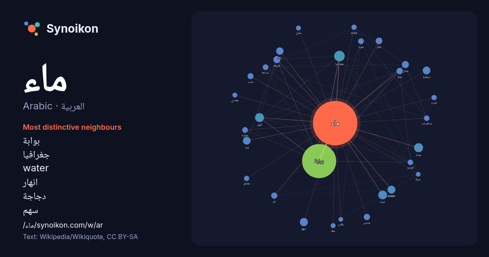

العربية · Arabic · popular word
ماء
“water” · The words found around it in 1193 instances from Arabic Wikipedia, Wikiquote.

Most distinctive neighbours
- بوابة 321×
- جغرافيا 29×
- water 24×
- انهار 23×
- دجاجة 22×
- سهم 22×
- زهر 20×
- سماء 17×
- ورد 16×
- بخار 15×
- عينين 14×
- عذب 14×
- يمثل 12×
- بئر 12×
- مورد 12×
- كومنز 12×
- سباحة 11×
- صلة 10×
- جلم 10.0×
- طبيعة 9.8×
× = how many times more often than in general Arabic Wikipedia text.
Most frequent neighbours
- بوابة 422
- كرة 61
- جغرافيا 40
- حياة 31
- انهار 29
- سماء 29
- اسم 28
- لاعب 28
- مياه 28
- ولد 26
- سهم 24
- water 23
- لكرة 23
- مواد 23
- دجاجة 22
- ورد 22
- منتخب 21
- بحر 20
- زهر 20
- ارض 18
In context
- الماء مادةٌ شفافةٌ عديمة اللون والرائحة، وهو المكوّن الأساسي للجداول والبحيرات والبحار والمحيطات وكذلك للسوائل في جميع الكائنات الحيّة، وهو أكثر المركّبات Wikipedia snippets · ماء
- الشيخ ماء العينين بن الشيخ محمد فاضل القلقمي، ولد في الحوض شرقي بلاد شنقيط آنذاك يوم الثلاثاء 27 شعبان 1246هـ، أخذ عن والده القرآن والعلوم الشرعية واللغوية Wikipedia snippets · ماء العينين القلقمي
- سَخَّانَات) هو جهاز منزلي يستعمل لتسخين الماء. ويتوجد سخان الماء بأشكال ومقايس مختلفة، وتختلف طرق عمله في تسخين الماء، وأكثرها شهرة هي التي تعمل بالكهرباء Wikipedia snippets · سخان الماء
- بئر زمزم أو زمزم، بئر ماءٍ في الحرم المكي بمدينة مكة المكرمة، تقع على بعد 21 مترًا شرقي الكعبة، لها تاريخ قديم، ويرجعه المؤرخون إلى 2000 قبل الميلاد كحد Wikipedia snippets · زمزم
- آمنة ماء العينين أو أمينة ماء العينين (مواليد 1980)، سياسية مغربية، ونائب برلماني سابق في مجلس النواب المغربي عن حزب العدالة والتنمية. وُلدت ماء العينين Wikipedia snippets · آمنة ماء العينين
- مياه الشرب أو الماء الشَّرُوب أو الماء الشريب هي المياه الصالحة للشرب وإعداد الطعام للبشر من دون إحداث مشاكل صحية، وتتصف بنظافتها وخلوها من مواد ضارة أو Wikipedia snippets · ماء الشرب
- الهطول (جمع الهَطْل ) في علم الطقس: نزول الماء بكثافة على شكل مطر أو ثلج أو بَرَد، أي يمكن أن يكون بشكل ماء سائل أو ماء مجمد. وتختلف كمية الهطولات ونوعها من Wikipedia snippets · هطول
- لفظ ماء إلى قسمين: أ- ماء مطلق وهو ما يصح استعمال لفظ الماء فيه بلا مضاف إليه. مثل ماء البحر أو النهر. ب- ماء مضاف وهو ما لا يصح استعمال لفظ الماء فيه Wikipedia snippets · الطهارة في الإسلام
More Arabic words
- أغنية
- إله
- تاريخ
- جبل
- جرس
- جزيرة
- جسر
- حديقة
- حصان
- حقيقة
- حياة
- خبز
- خريطة
- خريف
- ذهب
- زمن
- ساعة
- شاي
- شتاء
- صحة
- صحراء
- صمت
- صيف
- طبيعة
- طريق
- طعام
- ظل
- عائلة
- عاصفة
- عسل
- علم
- عمل
- غابة
- فن
- قطار
- قطة
- قلب
- قوة
- كلب
- لغة
- مال
- مدينة
- مرآة
- مطر
- ملح
- مناخ
- موت
- نجم
- والدة
Precomputed on 2026-10-09 with default settings (±5 words, medium corpus). The interactive map can refresh it with live data.